Needfinding
Four founders, four hours of conversation.
We ran four 60-minute interviews with prospective mentors, then took notes, analysis and synthesis into FigJam. Each founder became a persona we kept returning to.

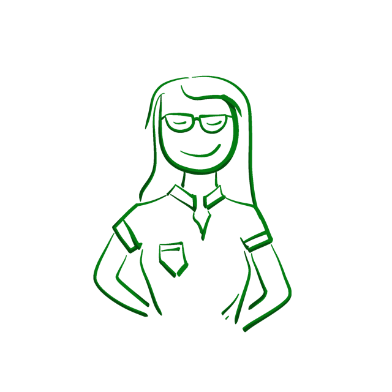
Our team of three designers from the Stanford d.school partnered with the Nasdaq Entrepreneurial Center. We were asked to scale the program tenfold, from 100,000 to 1,000,000 founders assisted, and to reduce failure rates for founders from under-resourced backgrounds.
Most of what the Center provides comes through mentorship programs. It relies on alumni, other founders and professionals to volunteer as mentors, so the capacity of each program is limited by how many mentors are available.
Fewer than 22.3% of founders who have benefited from Nasdaq's free resources come back to mentor. We set out to raise the rate at which alumni become mentors.
We ran four 60-minute interviews with prospective mentors, then took notes, analysis and synthesis into FigJam. Each founder became a persona we kept returning to.

We worked the interviews through empathy mapping, 2x2 matrices and a journey map for each founder, tracing their path before and after Nasdaq.
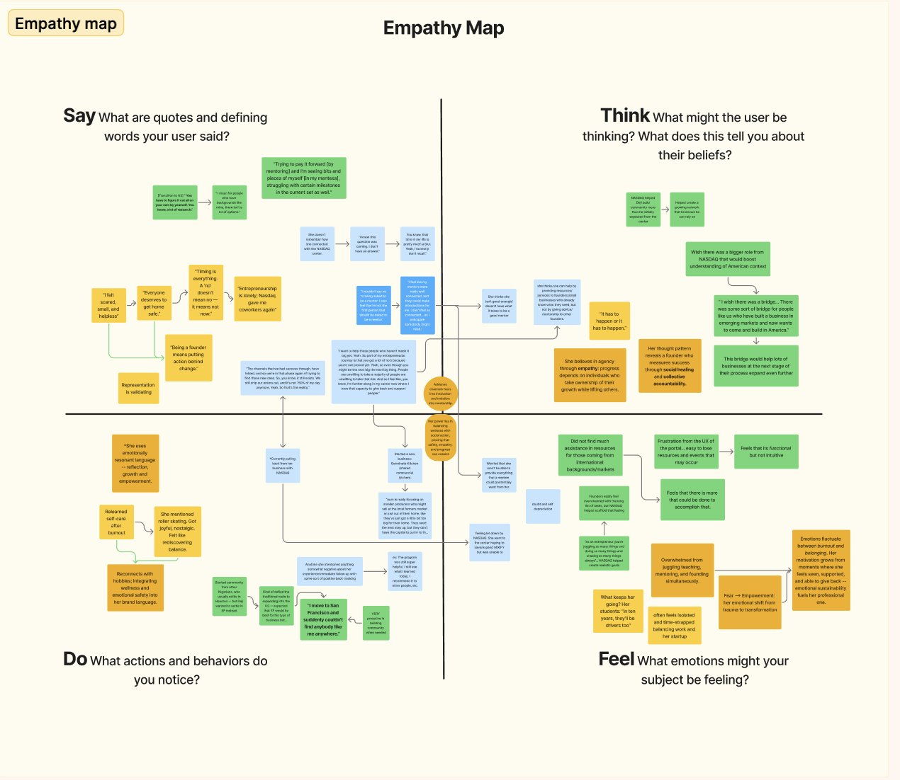
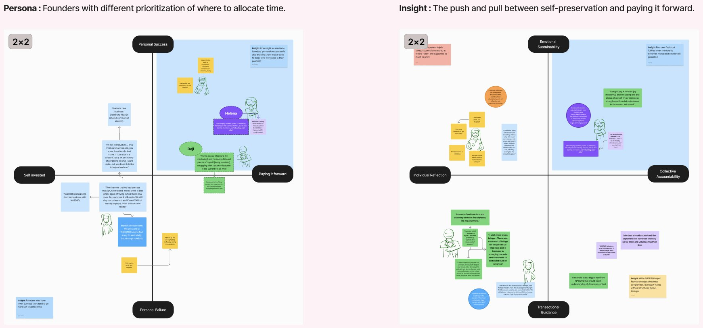
Emotional journey maps for each founder, before and after Nasdaq. Select any board to open it full size.
“I wouldn't say no to being asked to be a mentor. I also feel like I'm not the first person that should be asked to be a mentor.”
“I feel like my mentors were really well connected, and they could make introductions for me. I don't feel as connected as I anticipate somebody might need.”
Our hypothesis: if we create an intervention that boosts confidence in mentoring ability, more founders will go on to become mentors.
bridge a connection between mentors and non-mentors, where those who have mentored can share their experiences, address concerns, and explain how they overcame the obstacles of mentoring?
After filling out a questionnaire in the form of a ticket, mentors and non-mentors board the train and are offered a “menu” that prompts a casual but insightful conversation about mentoring.
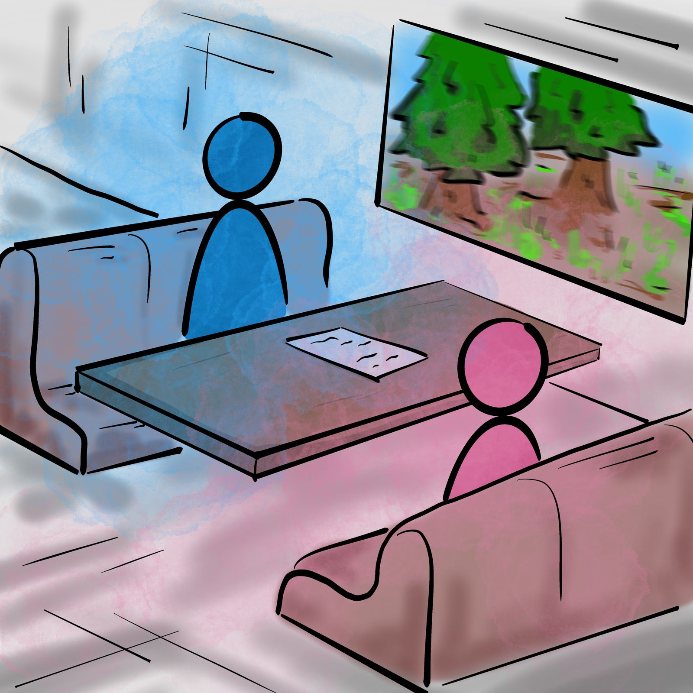

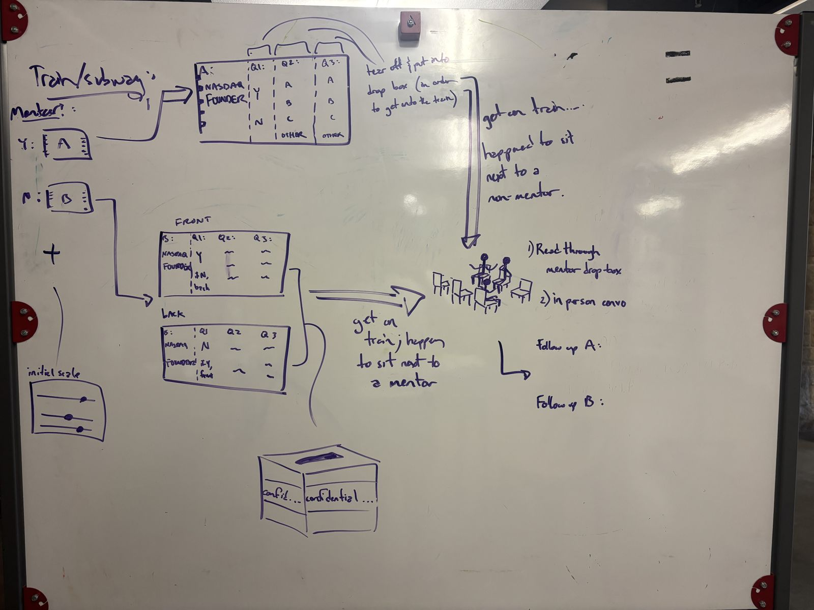
Founders from the Nasdaq programs, professors and faculty from the Stanford d.school, and staff from the Nasdaq Entrepreneurial Center came to test the prototype and give thoughts and critiques.
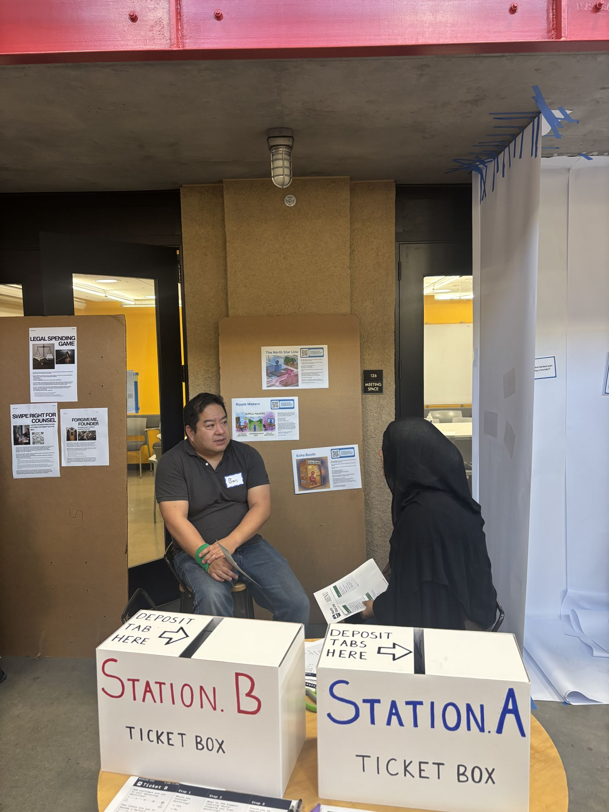
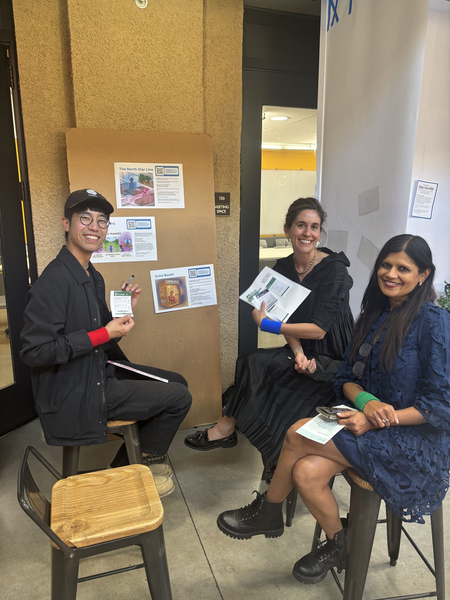
Alongside observing live behavior and responses, we compiled the deposited ticket responses.
Founders hold back from mentoring because they feel intimidated or underqualified.
100% of mentors and non-mentors listed time commitment as one of the biggest pain points of mentoring.
Some non-mentors did note concern about qualification. But all of the current mentors said they were not intimidated to start, so it would be hard for them to empathize with someone who is.


Nearly all founders from under-resourced backgrounds already have the intrinsic motivation to help others in similar circumstances. Many still can't, because they don't have the bandwidth to volunteer on top of running their own business. It simply isn't economically possible.
Time is a much more significant restraint than self-confidence. Founders need a mentorship model that compensates the time they spend with mentees.
reimagine mentorship as a two-way value exchange, where giving back also fuels a founder's own growth, expansion and credibility?
A tiered rewards system gives founders benefits in proportion to how much they have invested in mentoring. If founders divert time from their own business to help other founders, the Center reciprocates with rewards that help them develop that business.
We attended a pitch night at the VC Nest in Palo Alto to test the prototype and gather feedback.
We pitched our process and solution to a panel with the CEO, VP and Director of Learning of the Nasdaq Entrepreneurial Center, venture capitalists, Stanford's Directors of Undergraduate and Graduate Design, and other d.school teaching faculty.
I continued this work with the Center's staff through a fellowship, developing methods to increase volunteerism and researching motivational behaviors.
I led a team of two other designers, Sienna Nazarian and Vivien He, to develop What's Nest, an app addressing isolation among recently empty-nested, former full-time moms.
We set out to study empty nesters broadly. Two of our three interviewees had been stay-at-home moms, and they seemed the most impacted by the transition, so we narrowed our user group from empty nesters to recently empty-nested, former full-time moms.
We took notes, clustered and synthesized in FigJam, one board per interview. Select a board to open it full size.
We clustered the interview notes into themes and emerging patterns, then worked them through an empathy map, 2x2 matrices and a journey map of the transition.
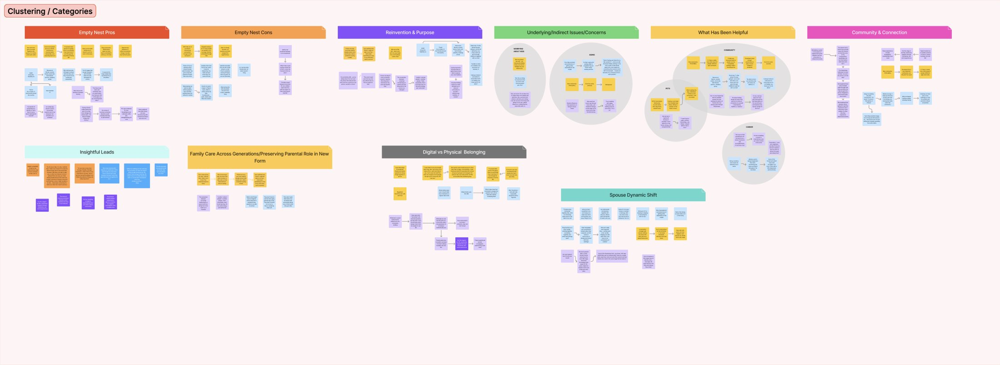
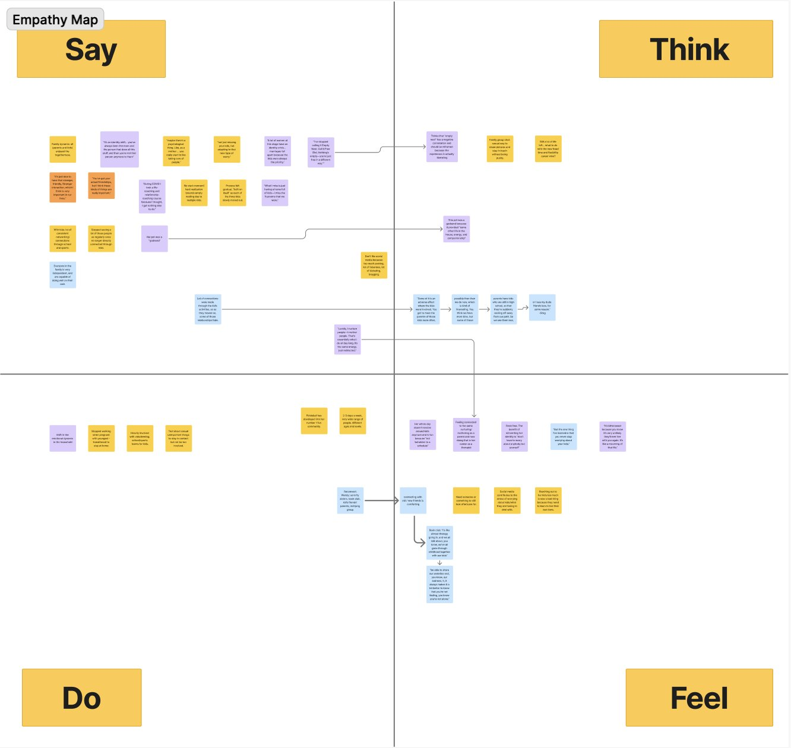
2x2 matrices.
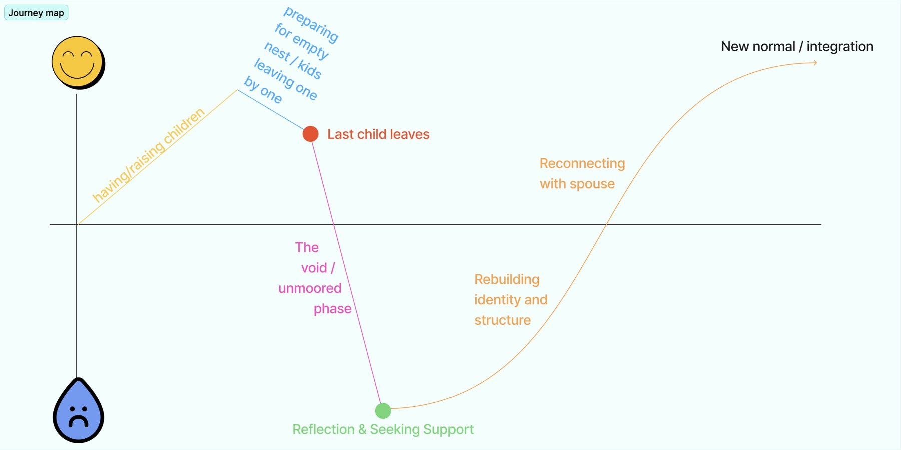
It's common to think of community as a network of connections and people, with the generalization of the more the merrier. For these moms, that's not the case. After their kids leave, they still have their spouse, other friends and social groups.
Their feelings of emptiness and lack of belonging aren't coming from being physically alone. They come from the lack of having someone to personally and deeply care for.
Addressing belongingness for these moms wasn't about helping them meet lots of new people, but about helping them find one or a few new people to take care of, because that's where they feel they belong.
support these empty nesters in transforming their instinct to care for others into opportunities for personal renewal and self-discovery?
We built and tested two prototypes, Hearth and What's Nest. As we gave them to our users, they were much less interested in using the app to meet new friends than in using it as an informative tool for local volunteer and career opportunities.
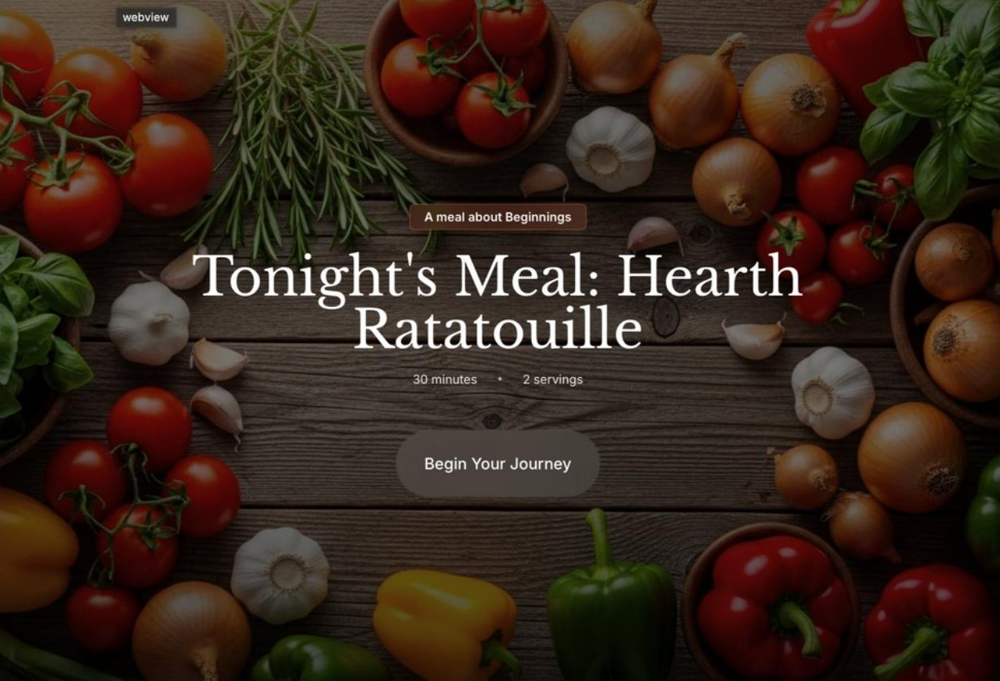
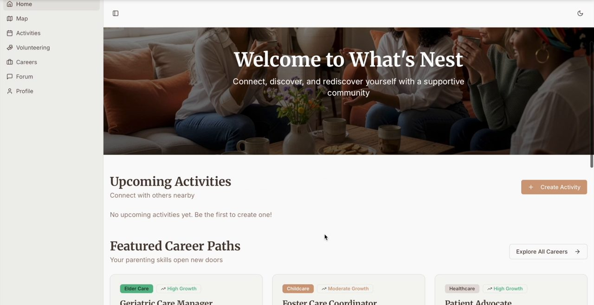
What we heard in testing.
That realization led us to refocus the app around volunteering and careers: a wide range of volunteer events with people to contact, and career pathways centered on skills already developed as a parent.
We pitched What's Nest to a panel of venture capitalists, Stanford's Director of Graduate Design and other teaching faculty of the Stanford d.school.
LARP, or live-action role-play, is where the slang term many of us know comes from. Players create and develop their characters, then live and fight within a fantasy world that has been built over the past 20 years of play, solving year-long missions and stories set by the game master.
You may have seen LARP in popular culture, or in a park near you. For this project, we set out to understand the real stories behind it.
The game master for most LARP in the Bay Area. He started out teaching at a Montessori school, and LARP became his full-time job around 2000, after a group of moms in Pennsylvania asked him to run a league for their homeschooled children. He credits his teaching background with helping him build an impactful platform, especially since much of the LARP community is neurodivergent.
27, and LARPing since he was 6. Playing in the forest with swords turned into a structured hobby when he joined Chris's league as a shy pre-teen. Playing a confident, fearless barbarian helped him gradually overcome his social anxiety. He took over the Berkeley events during COVID because he “couldn't just let the culture die.”
Playing for more than 20 years, and now runs his own league. He calls LARP “so important, so necessary, and so healthy” for kids who feel the need to escape the real world. A kid in his Friday league with Tourette's has built confidence because, in the game, his symptoms don't cause anyone issues.
We had the chance to both talk and LARP with these players and more. From our time with them, we distilled two key findings.
Why the word choice of “practice”? We practice sports to win at competitions, we practice instruments to perform for audiences, we practice homework to score high on a test. We practice to get better at something we aren't confident in yet in order to avoid undesirable outcomes.
To some, social norms develop subconsciously, but we've heard that to many LARP players, these conventional standards don't feel so intuitive. Operating within a fictional world as an imagined character offers a “sandbox,” or contained, low-risk environment for them to interact in ways they otherwise wouldn't, like a shy Rowan being nudged to play a louder and fearless Barbarian character.
“When I was a kid, I would never in a million years talk to someone I didn't know… LARP definitely assisted in me growing out of that.”
“If your two little characters are talking, then it'll be easier to talk as not your character.”
Rowan
Why do we see this discrepancy? If the core of the game is the lore and the roleplaying, as we heard in interviews and saw in interactions, why do they introduce LARP through basic combat rules, rather than setting the fantasy scene first?
When we teach, we often teach what we think will be most helpful from our own lived experiences. Chris, Toby, and Rowan's stories embody this exactly. Oftentimes, the lived experience of LARPers may be a feeling of “newness,” both in game when faced with new missions, tasks, or storylines, but also in the real world, when faced with uncertain situations or environments. For these players, having concrete guidelines for what they can and can't do in any given moment might feel like the most important thing.
We organized the “why's” from our findings using a double-layered Venn diagram, separating the higher and lower order interpretations to find the insight at the center. Our two highest-level why's from each finding were:
These synthesized into our insight. This is the structure that Chris builds, that Rowan and Toby grew up in, and now pass on.
We used this insight to inform the needs that we included in our needs hierarchy, tracing the common needs that LARPers share under the insight—to fit in, to be confident, and to have fun—down to the activities that we participated in and the qualifying needs that facilitated them.
One theme that we found in our interviews and observations that became apparent in our needs hierarchy is the tradeoff between combat and roleplay. The need to roleplay primarily fulfills the need to fit in while the need to fight and strategize primarily fulfills the need to have fun.
However, LARPers shared that roleplaying benefits from smaller, tighter, and more fluid group environments, while combat is most engaging when there are many more people on the field. This indicates that one of our qualifier needs—the need to introduce more members to the community—can simultaneously fulfill the need to have fun, but also detract from the need to fit in.